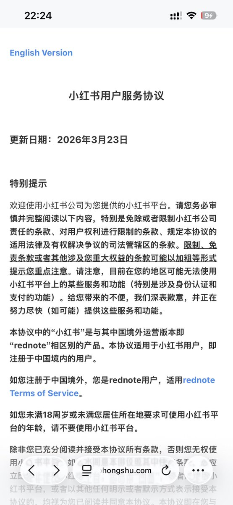
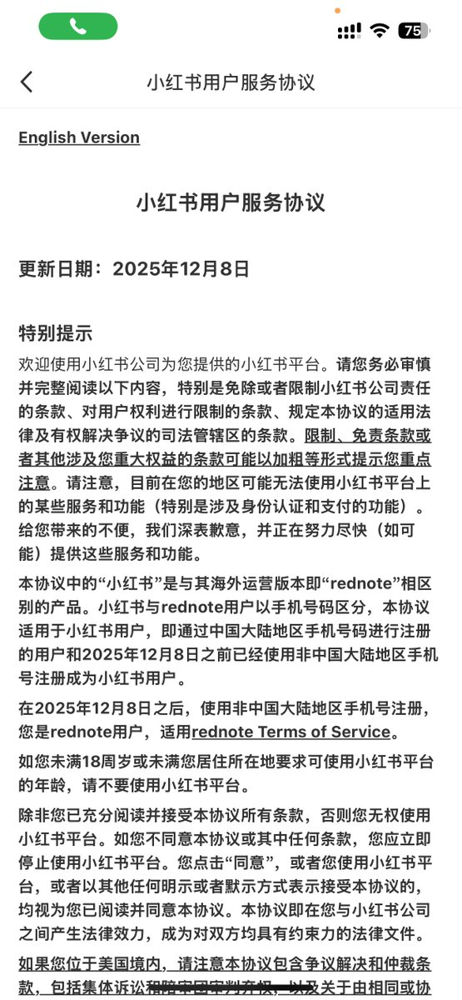
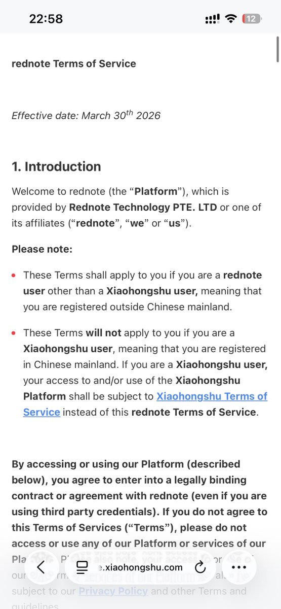

参考最新的《小红书用户服务协议》，若用户注册于中国境外，则是rednote用户，而不再以所绑定的手机号区分。在此之前，小红书与rednote用户以手机号码区分，原文为：“在2025年12月8日之后，使用非中国大陆地区手机号注册的是rednote用户”。
最近一次更新的rednote Terms of Service中也提到：These Terms will not apply to you if you are a Xiaohongshu user, meaning that you are registered in Chinese mainland. If you are a Xiaohongshu user, your access to and/or use of the Xiaohongshu Platform shall be subject to Xiaohongshu Terms of Service instead of this rednote Terms of Service.
在此协议更新后，rednote users可能直接转变成小红书用户，小红书用户也有可能直接变为rednote users。“小红书”是与其中国境外运营版本即“rednote”相区别的产品，两个产品将通过用户注册地进行区分。
最近一次更新的rednote Terms of Service中也提到：These Terms will not apply to you if you are a Xiaohongshu user, meaning that you are registered in Chinese mainland. If you are a Xiaohongshu user, your access to and/or use of the Xiaohongshu Platform shall be subject to Xiaohongshu Terms of Service instead of this rednote Terms of Service.
在此协议更新后，rednote users可能直接转变成小红书用户，小红书用户也有可能直接变为rednote users。“小红书”是与其中国境外运营版本即“rednote”相区别的产品，两个产品将通过用户注册地进行区分。


